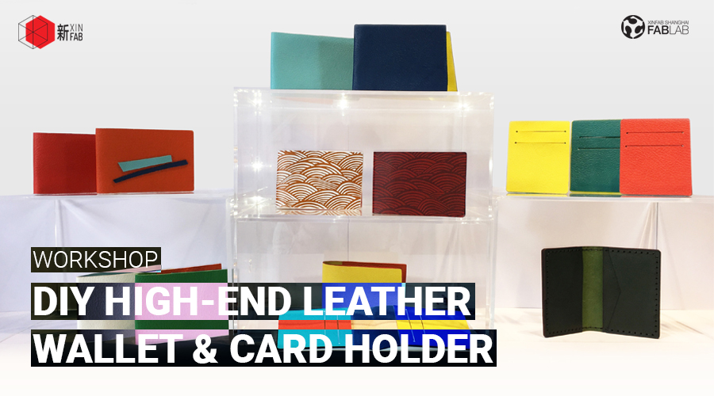
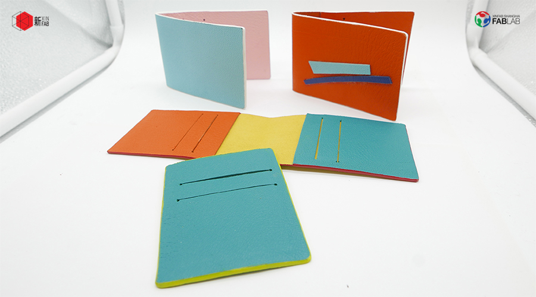
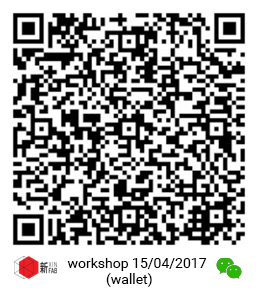

WORKSHOP
DIY High-end leather wallet & card holder | DIY高端真皮钱包和卡套

When:Saturday, April 15, from 1pm to 4pm
Where: Xinfab - 665,Changhua Road, Jing'an District, Shanghai (DT Space)
Price: 300 RMB
Join fashion and product designer Tony to make your own wallet and card holder out of real high quality leather imported straight from Italy!
Tony will teach you how to make your own high-end small leather wallet and card holder. You will bring home two items nobody else in the world has because you will make them yourself! You will also get a chance to see how to cut leather in Xinfab's Universal laser cutter and customize your items by engraving your name on them. You will learn the techniques luxury brands use to make their super ultra expensive leather accessories: you will glue, polish, edge, mold, stitch and seal your items yourself.
Colors you will choose from: orange, blue, green, yellow and aqua
Things you should bring:
// If you want to engrave something other than your name and you know how to create a vector, please send us your .AI file in advance. (It will be scaled down to fit the items - must be black and white)
// Your passion, curiosity, and questions
Price includes:
// Real Italian imported high-quality leather for your wallet and card holder

WORKSHOP SCHEDULE
// STEP 1: ABOUT LEATHER
_Introduction to leather
_Leather care
_Leather edging
// STEP 2: LASER CUTTER
_Introduction to laser cutting
_Learn how to use Xinfab's Universal laser cutter
_See your wallet and card holder being cut and your name being engraved
// STEP 3: MAKE IT
_Glue, polish, edge, mold, stitch and seal your items
_Voilà! Take your wallet and cardholder home
///////////////////////////////////
HOW TO SIGN UP
LIMITED TO 8 PEOPLE
// Alipay
Transfer the workshop fee to: pay@xinfab.com
Scan the QR code below:

Questions? Send an email to info@xinfab.com.
///////////////////////////////////
ABOUT THE TEACHER
Tony Hua is a Sino-Vietnamese-Australian fashion designer based in China for the past 12 years. With extensive experience in fashion and other creative industries, Tony is more like a Swiss knife of talent and skills, able to design in fact pretty much anything. Tony's mind is a inexhaustible source of ideas, where he always finds something amazing to make.
时间:：4月15日星期六，13:00 - 16:00
地点： 新Fab - 上海市静安区昌化路665号（DT空间）
价格： 300元
加入时尚和产品设计师Tony，使自己的钱包和卡套从真正的高品质皮革进口直接从意大利！
Tony会教你如何制作自己的高档小皮革钱包和持卡人。 你会带回家两个世界上没有人有的东西，因为是你自己做的！ 你还将有机会看到如何在新fab的Universal激光切割机中切割皮革，并通过在其上雕刻您的名字来自定义您的物品。 你将学习奢侈品品牌使用超级超高价格皮革配件的技术：你将自己粘贴，抛光，边缘，模具，缝合和密封你的物品。
您可以选择的颜色：橙色，蓝色，绿色，黄色和水彩
需要带上
// 如果你想雕刻除你的名字以外的东西，你知道如何创建一个矢量，请提前给我们发送你的.AI文件。 （它将缩小以适应项目 - 必须是黑白）
// 你的热情、好奇心和问题
价格包括:
// 真正的意大利进口高品质皮革为您的钱包和卡套
///////////////////////////////////
工作坊流程
// 第1步：关于皮革
_皮革介绍
_皮革护理
_皮革边缘
// 第2步： 激光切割机
_激光切割介绍
_了解如何使用Xinfab的Universal激光切割机
_看到你的钱包和卡套正在切割，你的名字被雕刻
第3步： 做
_粘贴, 抛光，边缘，成型，缝合和密封您的物品
_Voilà！ 把你的钱包和卡套带回家
///////////////////////////////////
如何注册
有限8人
// 支付宝
将车间费转移到： pay@xinfab.com
// 微信
扫描上面的QR码
有问题? 发送电子邮件到 info@xinfab.com.
///////////////////////////////////
关于教师
Tony Hua是一位在中国的中国 - 越南 - 澳大利亚装设计师超过12年。 Tony在时尚和其他创意产业方面拥有丰富的经验，像一个才和技巧瑞士刀，他可以设计差不多任何东西。 托尼的大脑是一个无尽的想法源头，他总是发现惊人的设计想法。